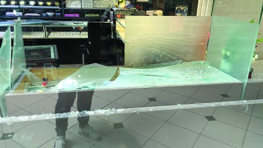
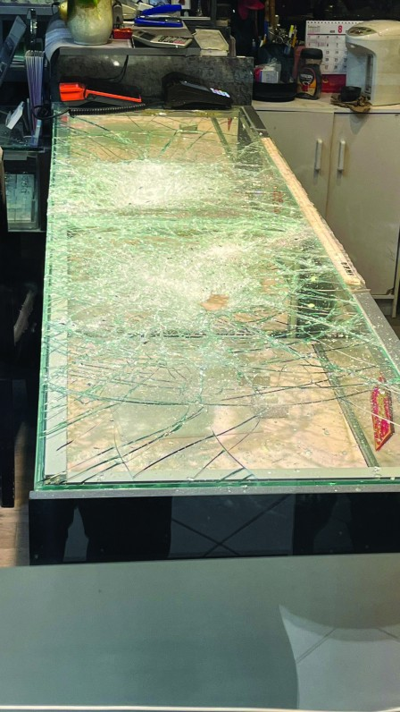
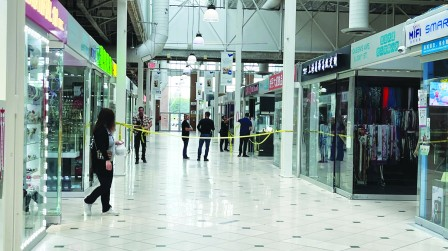
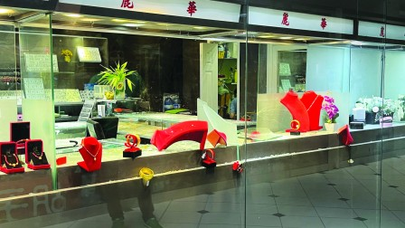

图为被劫珠宝店饰柜被击碎。（明报记者摄）


警方封锁太古广场珠宝店附近现场调查。（明报记者摄）

珠宝店饰柜陈列品被洗劫。（明报记者摄）
万锦市太古广场内的丽华珠宝店(Divine Jewellery)昨天（6日）下午被劫。3名歹徒抢走一批珠宝后逃去。这是该珠宝店的第三次被劫，上一次被劫时是去年8月12日。
昨日的劫案发生在下午，珠宝店旁边商店的1名店员表示，歹徒得手逃去，现今只能说出的就是「害怕」两字。而太古广场二楼有商号在案发时听到多响饰柜被击碎的声音。
多部警车事后赶到现场，警员在取证后离去，珠宝店在下午7时前解封，但店主已关门暂停营业。
2023年8月12日该间珠宝店亦被劫，当时一名手持铁锤的劫匪抢去价值数千元的珠宝，而该店在2019年4月时亦曾被2名黑人劫匪抢去数万元财物。
当时珠宝店店主称，他向来是「打开门做生意」，如今看到劫匪如此猖獗，也只能「关起门来迎客」了。
当日被问到会搬去其他商场？当时他回答说：「搬去哪里都一样的！」